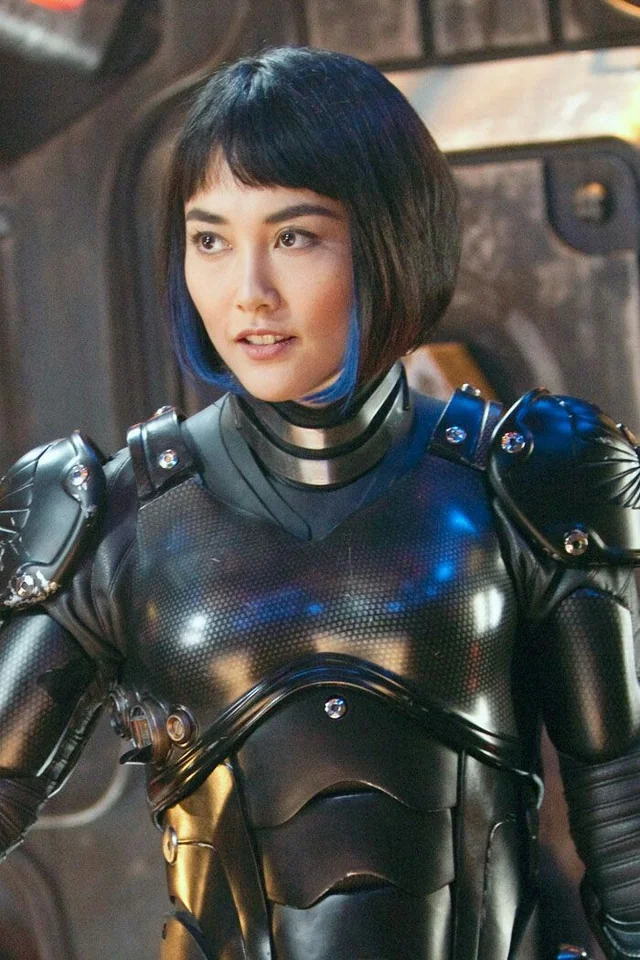

Charlie Hunnam
Ator principal do filme
Ele pilota um dos jaegers
Um site para falar sobre meu Filme

passa em um futuro alternativo na Terra, onde a humanidade é atacada por monstros gigantes chamados Kaiju, que emergem de um portal interdimensional localizado no fundo do Oceano Pacífico
As Batalhas: Acontecem principalmente em grandes cidades costeiras banhadas pelo Pacífico e no próprio oceano, já que os robôs gigantes (Jaegers) precisam interceptar os monstros antes que destruam as metrópoles.
Ator principal do filme
Ele pilota um dos jaegers

Atriz principal do filme
Ela pilota um dos jaegers
| Filme | Ano | Destaque |
|---|---|---|
| 1 | 2013 | a fenda se abriu e veio montros do oceano |
| 2 | 2018 | um dos cientista se cnecta com um dos kaijus e acaba trazendo novamente ao mundo |
O visual do principal Jaeger do filme, o Gipsy Danger, foi inspirado na arquitetura de famosos arranha-céus americanos Para dar peso e realismo à atuação dos pilotos, a produção construiu uma réplica real da cabine de comando réplica real da cabine de comando (o con-pod) com cerca de 20 toneladas e quase quatro andares de altura, equipada com sistemas hidráulicos que se movimentavam de verdade
clique no botão abaixo para saber mais sobre o filme
youtube